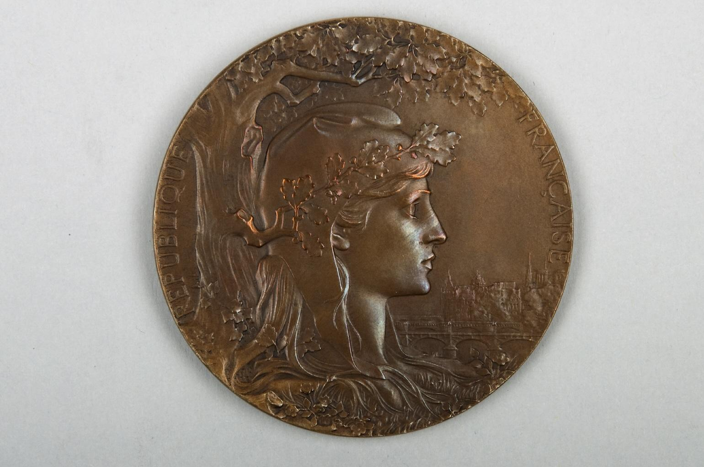

GRAND PRIX
Joaquín Sorolla dejó una huella imborrable en la Exposición Universal de París de 1900, donde presentó seis obras, entre ellas "¡Triste herencia!", que le valió el Grand Prix, la máxima distinción del evento. Originalmente, Sorolla había pensado en titularla "Los hijos del placer", pero fue su amigo, el escritor Vicente Blasco Ibáñez, quien le sugirió el cambio a "¡Triste herencia!", un título que no solo capturó la esencia de la obra, sino que también marcó un hito en la historia del arte. La obra se convirtió en un símbolo de su genialidad y en un testimonio del diálogo entre arte y literatura en la España de la época.

Sus amigos y discípulos quisieron celebrar este triunfo con un banquete en su honor el 11 de junio en la fonda Viveros de Lázaro López en Madrid.